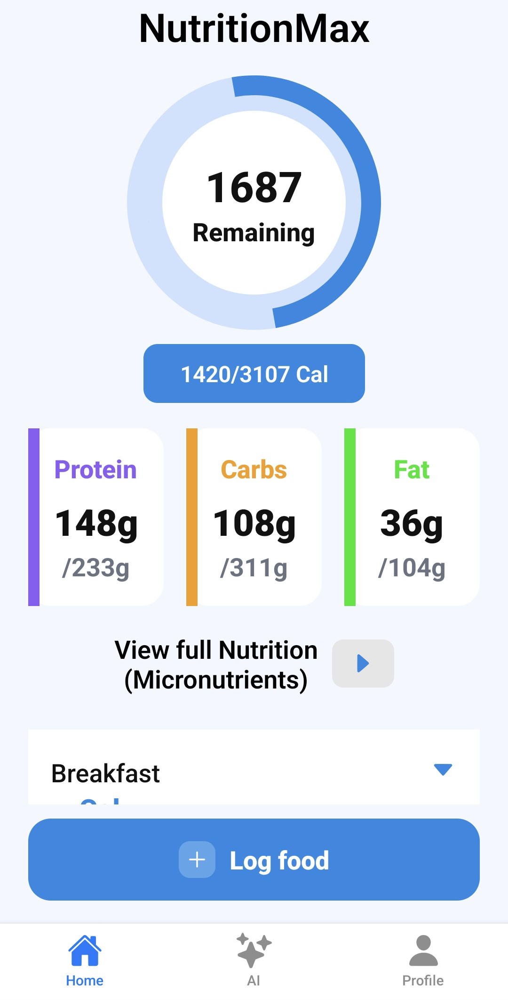

NutritionMax
AI-Powered Nutrition Tracking and Recommendation System
Raels Santers
BSc (Hons) in Software Systems Development
Raels Santers
BSc (Hons) in Software Systems Development
NutritionMax is a mobile application that allows users to track calories, macronutrients and micronutrients while generating personalised AI-based food recommendations based on dietary preferences.
